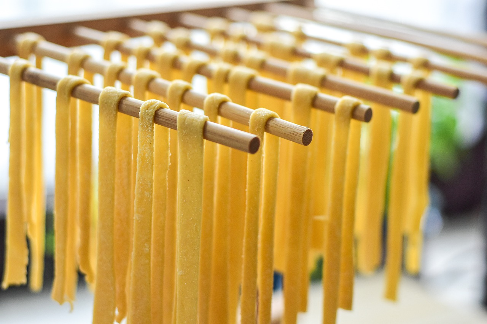
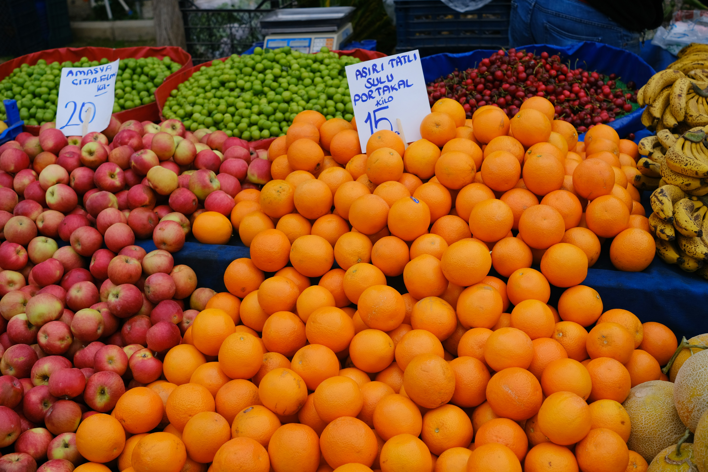
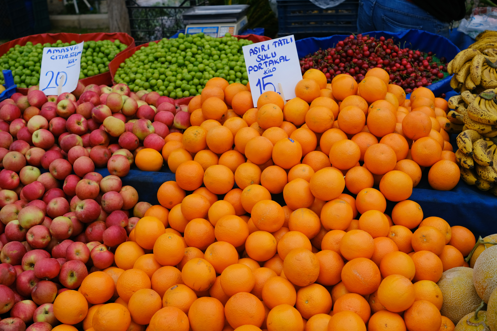
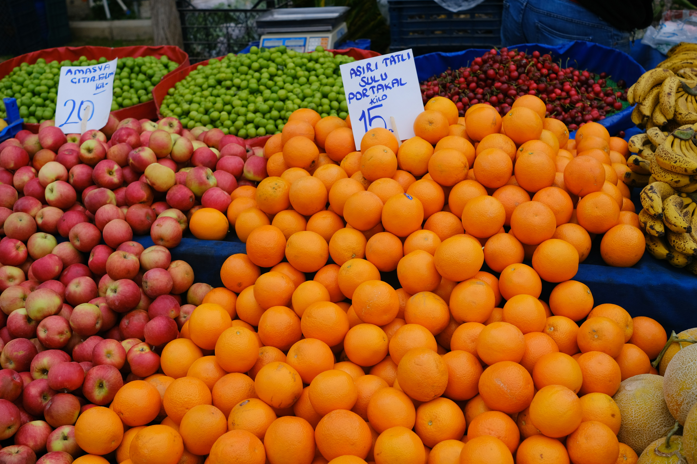

Locally Sourced

 


Kylie's Gourmet Tucker is Geelong owned and operated. All of our meals are made fresh with produce sourced locally from assorted shops and markets in Geelong. By supporting our local business, we in turn support local business.
The meals are prepared just prior to delivery, giving you the freshest possible cuisine to enjoy. Every effort is taken to provide a variety of choice, including gluten free options, to please all tastebuds.